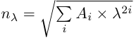
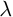
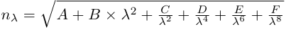

Material::Schott class reference
[Core module]
Declaration
#include <Goptical/Material/Schott>
namespace Goptical {
namespace Material {
class Schott;
};
};
This class is a member of the Material namespace.
Inheritance
Description
This class models optical properties of dielectric materials with Schott refractive index dispersion formula:

with  the micrometer wavelength.
Members
See also the full member list section for this class.
Inherited members
- 36 members inherited from Dielectric
Functions
- Schott()
- Schott(double A, double B, double C, double D, double E, double F)
- void set_term(int term, double K)
- void set_terms_range(int first, int last)
Members detail
Create an empty schott model
Create a schott model with [-8,2] exponents range:
 + \frac{D}{\lambda^4} + \frac{E}{\lambda^6} + \frac{F}{\lambda^8}}" />
Set term coefficient, term must be a multiple of 2.
Set exponents range, must be multiples of 2